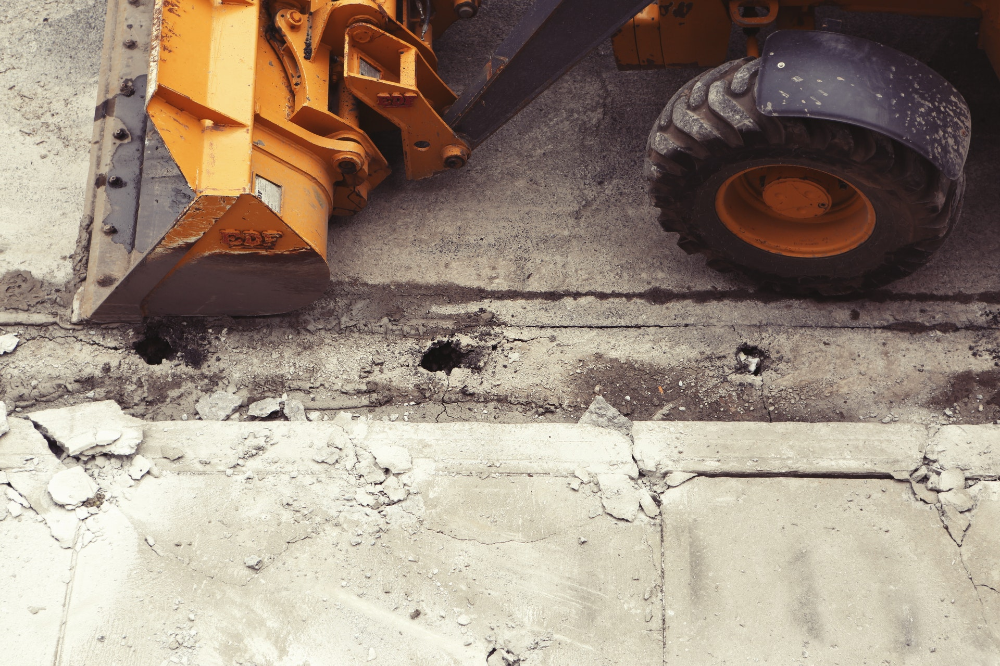
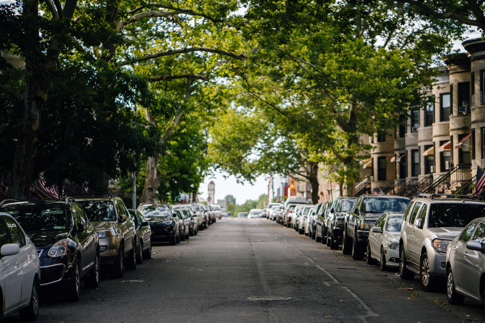
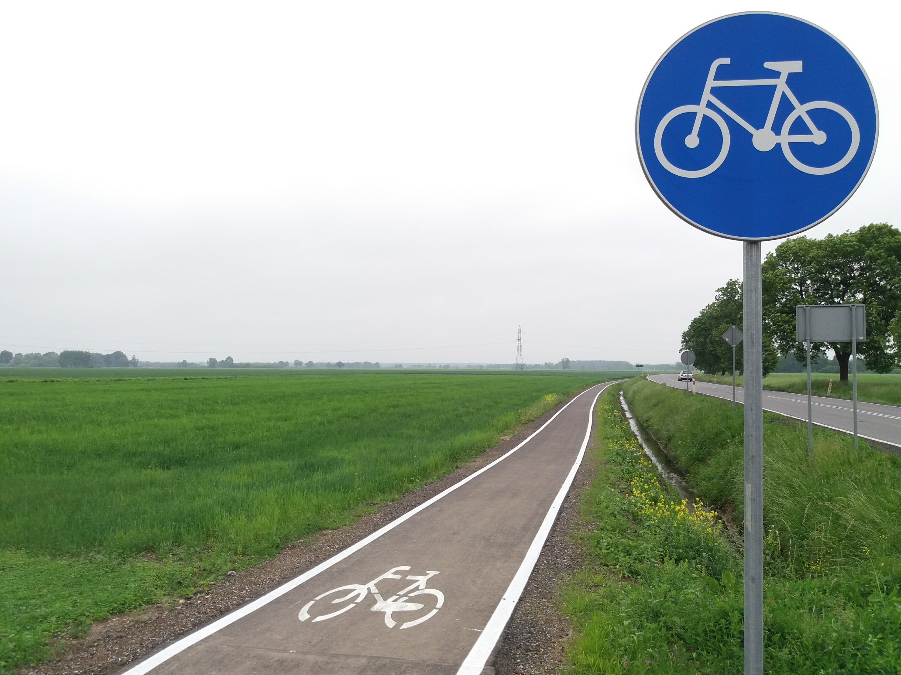
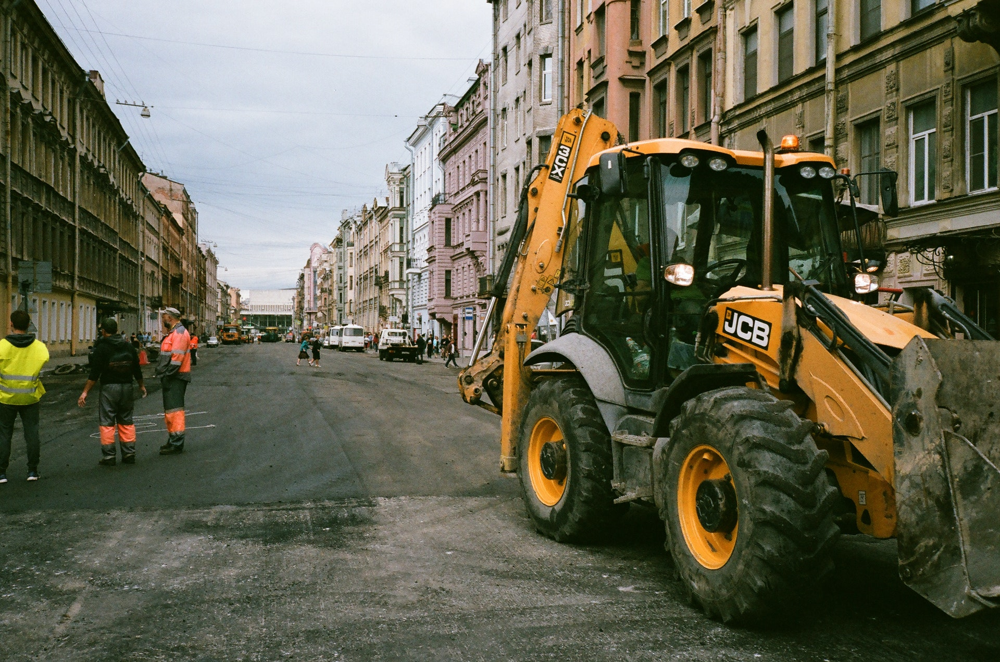
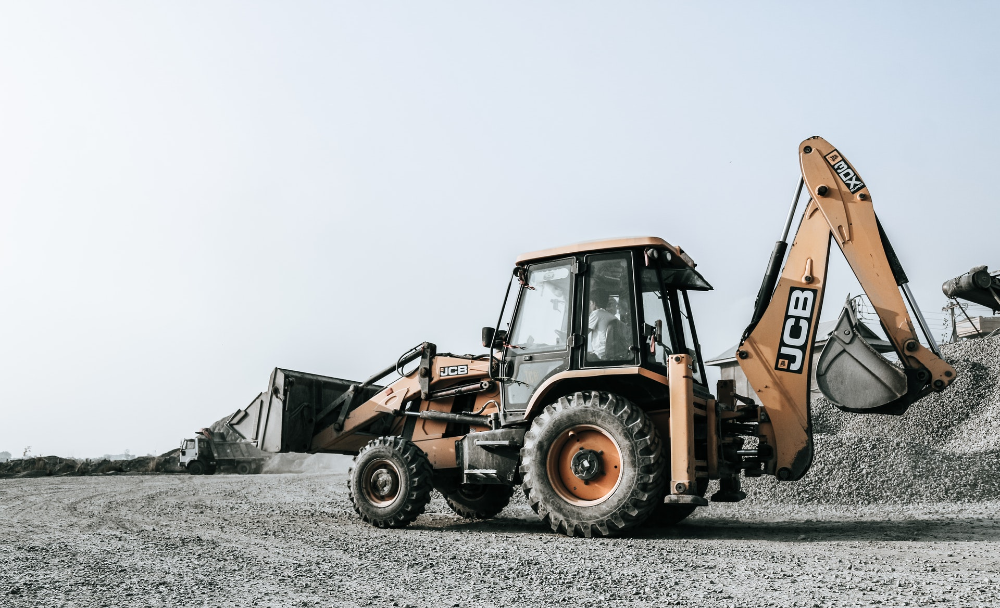
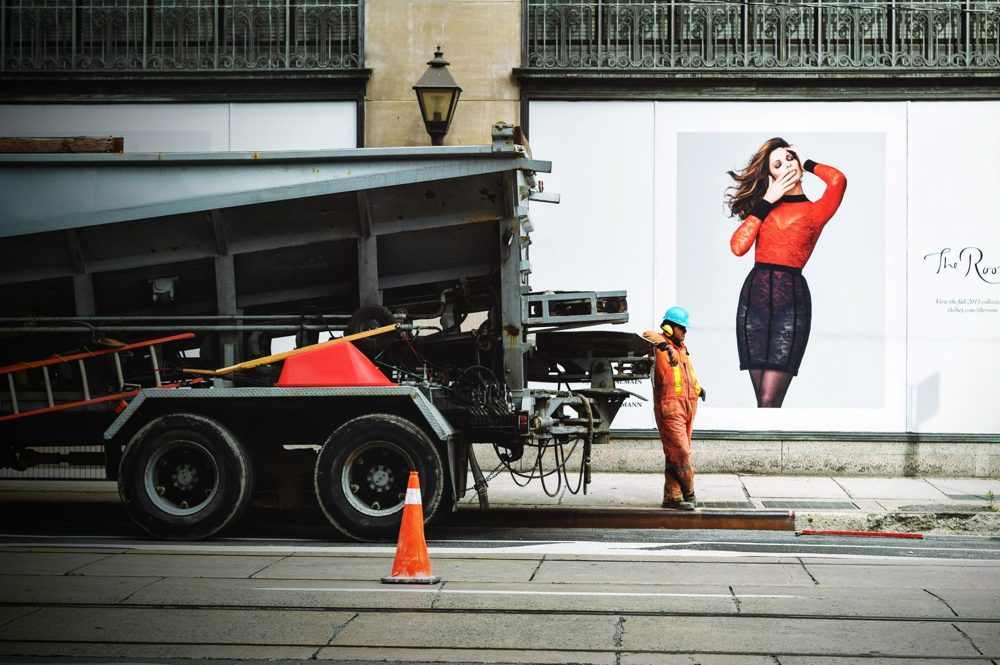

AS Roads oferuje kompleksowe usługi w zakresie budowy dróg. Jesteśmy w stanie wykonać każdy rodzaj warstwy drogowej. Zaczynając od prac przygotowawczych usunięcia wierzchniej warstwy ziemi oraz przygotowania podłoża poprzez wykonanie odpowiedniej podbudowy , kończąc na warstwach asfaltowych i betonowych wraz z przygotowaniem, skarp, poboczy, pasów dzielących, zieleni a także montażem infrastruktury drogowej. Wszystkie inwestycje budowlane prowadzimy zgodnie z najwyższymi wymogami zarówno pod względem projektowo-budowlanym, przepisów bezpieczeństwa, ale także ochrony środowiska.
AS Roads oferuje kompleksowe usługi w zakresie wykonastwa wszelkich prac brukarskich. Nasza firma zajmuje się układaniem nawierzchni z kostki betonowej i granitowej, wraz z infrastrukturą poboczna jak krawężniki i obrzeża drogowe. Roboty wykonujemy zarówno dla klientów indywidulanych a także dla Firm prywatnych i Instytucji publicznych. Do swoich realizacji wykorzystujemy materiały najwyższej jakości renomowanych marek. Układane przez nas nawierzchnie są estetyczne oraz dopasowane wyglądem do otoczenia i wymagań projektowych. Dysponujemy profesjonalnym sprzętem, oraz kadrą pracowniczą posiadającą duże doświadczenie w pracach brukarskich.
Roboty polegające na budowie układu ścieżek rowerowych wykonujemy zazwyczaj na zlecenie podmiotów administracji samorządowej, lub jako podwykonawcy dla prywatnych inwestorów.
Budowa i Modernizacja Dróg jest naszym podstawowym profilem usług. Realizacje drogowe to nasza specjalność. Stale rozwijający się park maszynowy a także doświadczony zespół pracowników pozwala nam wykonywać nawet najbardziej skomplikowane zlecenia. W ramach prac remontowych zajmujemy się głównie: rozbiórka obecnego podłoża, przygotowania podłoża poprzez wykonanie odpowiedniej podbudowy Wykonanie warstw wierzchnich asfaltowych lub betonowych Wykonanie remontów cząstkowych nawierzchniowych jak naprawa ubytków w asfalcie w tym także odtwarzania nawierzchni po robotach kanalizacyjnych, wodociągowych, gazowych i ciepłowniczych i kanalizacji sanitarnej
Podczas robót drogowych wykonujemy prace rozbiórkowe przy użyciu odpowiednich maszyn i urządzeń a także ręcznie kiedy tego wymaga sytuacja jednocześnie przestrzegając przepisów bezpieczeństwa, ale także ochrony środowiska. W ramach prac rozbiórkowych wykonujemy między innymi: wyznaczenie powierzchni przeznaczonej do rozbiórki, rozkucie i zerwanie nawierzchni, - ew. przesortowanie materiału uzyskanego z rozbiórki, w celu ponownego jej użycia załadunek i wywiezienie materiałów z rozbiórki, wyrównanie podłoża i uporządkowanie terenu rozbiórki
Firma AS Roads podczas wykonywania robót drogowych stale współpracuje z Firmami zewnętrznymi o ugruntowanej pozycji na rynku którym to zleca prace z zakresu instalacji sieci zewnętrznych takich jak chociażby Budowa sieci kanalizacji deszczowej.
